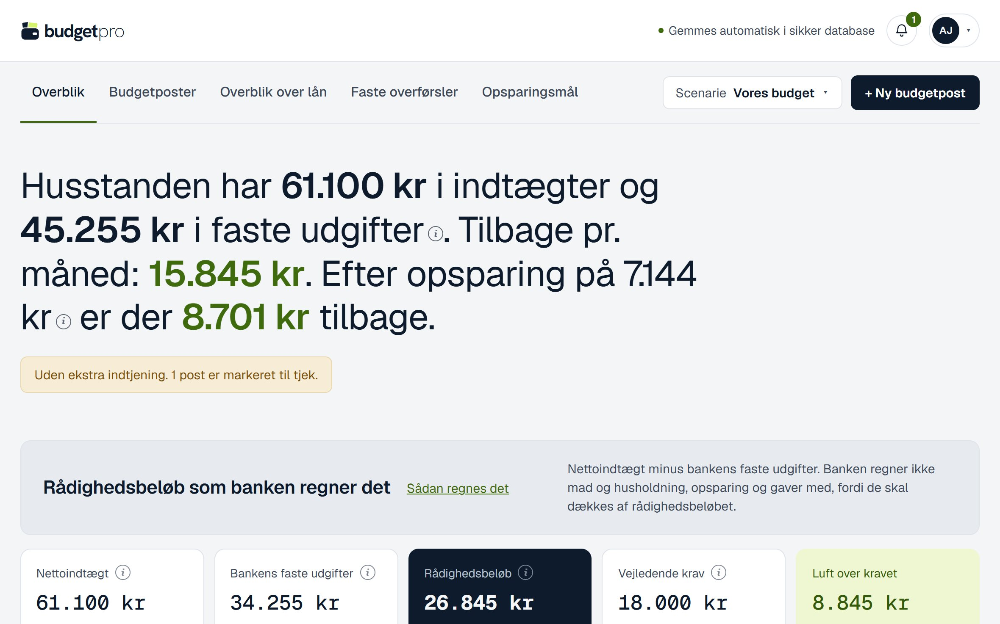

Tak, fordi du vil teste budgetpro. Denne guide viser dig trin for trin, hvordan du kommer ind og laver dit første budget. Du skal ikke oprette dig, og du får ingen mail eller invitation fra os. Alt, hvad du skal bruge, står på denne side.
Loginet {{LOGIN}} er dit eget i testperioden. Del det og adgangskoden ikke med andre.
budgetpro er et budgetværktøj på nettet. Du lægger husstandens faste indtægter og udgifter ind, og budgetpro regner ud, hvad der er tilbage hver måned, hvem der skal betale hvad, og hvad du har til rådighed, som banken regner det.
| Udgave | Hvad er det |
|---|---|
| budgetpro | Hovedproduktet til privatpersoner og familier. Det er det, du tester. |
| budgetpro Erhverv | Banker og ejendomsmæglere kan give deres kunder budgetpro i en periode. Det er det samme værktøj. |
| budgetpro Skole | En enkel udgave til undervisning i 7.–9. klasse, hvor eleverne laver et budget for en ung voksen. |
Du må gerne bruge runde, opdigtede tal, når du tester. Skriv ikke kontonumre, cpr-numre eller andre personlige oplysninger.
Siden er låst, mens vi tester. Derfor skal du først skrive en fælles adgangskode til siden. Brug gerne en computer første gang.
| Der står “Siden er ikke åben endnu.” | Adgangskoden til siden var forkert. Genindlæs siden og skriv den igen. |
| Boksen med adgangskoden kommer igen | Det er normalt, hvis du har lukket browseren. Skriv den igen. |
| Du er logget ud | Gå til budgetpro.dk/login og skriv {{LOGIN}} igen. Dit budget er gemt. |
| Noget andet | Skriv til {{KONTAKT}}. |
Før du laver dit eget budget, kan du se, hvordan budgetpro ser ud, når alt er udfyldt. Det er budgettet for en opdigtet familie, hvor alle funktioner er i brug.

Første gang er dit budget tomt. Guiden “Start nyt budget” hjælper dig i gang. Det tager omkring 10 minutter. Alt kan rettes bagefter.
| Beskrivelse | Husleje |
| Kategori | Skriv eller vælg “Bolig” |
| Beløb pr. betaling (kr.) | 8.000 |
| Hvor ofte | Hver måned |
Nu kan du gå på opdagelse i dit eget tempo. Der er ingen opgaver, og du kan ikke ødelægge noget.
Du kan altid kigge i det færdige budget igen på budgetpro.dk/demobruger. Bagefter kommer du tilbage til dit eget budget på budgetpro.dk/login: skriv {{LOGIN}} og tryk “Skift bruger”.
| Hvor | Hvad |
|---|---|
| De fem faner øverst | “Overblik”, “Budgetposter”, “Overblik over lån”, “Faste overførsler” og “Opsparingsmål”. |
| “+ Ny budgetpost” | Læg en ny indtægt eller udgift ind. |
| “Scenarie” | Prøv en ændring, fx “Ny bil”, uden at røre dit budget, og sammenlign. |
| Klokken øverst | Opgaver: det, der mangler at blive gjort. |
| Det runde ikon øverst til højre | “Indstillinger”, “Sådan regnes det”, “Kom i gang” (filmen), “Import og eksport” (PDF og Excel), lyst eller mørkt tema og “Log ud”. |
Det vigtigste for os er at høre, hvor du blev i tvivl, hvad du ikke forstod, og hvad du synes, der mangler. Skriv det ned undervejs, gerne med et skærmbillede, og send det til {{KONTAKT}}. Små ting er lige så vigtige som store.
Brug listen som opslag, hvis du vil vide, hvad en del af budgetpro kan. Navnene i anførselstegn er dem, du ser på skærmen.
| Fane | Hvad den viser |
|---|---|
| “Overblik” | Hvad husstanden har i indtægter og faste udgifter, og hvad der er tilbage pr. måned, før og efter opsparing. Rådighedsbeløbet, som banken regner det. Et kort pr. konto, der viser, om der overføres nok. “Hvem betaler hvad”: et kort pr. person. “Måned for måned”: saldoen på en konto de næste 12 måneder. |
| “Budgetposter” | Alle poster i én tabel med beskrivelse, hyppighed, beløb, konto og betaler. Søg og filtrér. “Udvikling i poster” viser, hvilke udgifter der er steget. |
| “Overblik over lån” | Restgæld, ydelse og renter pr. måned, gennemsnitlig rente, hvornår lån er betalt ud, og hvor mange penge det frigør. |
| “Faste overførsler” | Hvad der skal overføres fra hver lønkonto, og hvilke overførsler der skal rettes i netbanken. |
| “Opsparingsmål” | Hvert mål med beløb pr. måned, hvor langt man er nået, og hvornår målet nås. |
| Funktion | Hvad den gør |
|---|---|
| Guiden “Start nyt budget” | Hjælper dig i gang: tomt, ud fra kontoudskrifter eller ud fra et budget, du har i Excel. |
| Scenarier | Prøv en ændring uden at røre dit budget, og sammenlign side om side. |
| Kladder | Hele budgetter ved siden af dit eget, fx til et nyt budget efter en flytning. |
| Kontoudskrifter | Læser CSV, Excel og PDF fra netbanken og finder de faste poster. Selve filen gemmes ikke. |
| Fordeling | Fælles udgifter deles efter indkomst, ligeligt eller med fast procent. |
| Opgaver | Klokken samler det, der mangler, fx overførsler, der ikke er oprettet i banken. |
| Påmindelser | Påmindelse om at se budgettet igennem, fx hver måned. |
| Deling | Op til tre personer på samme budget, hver med sit eget login. |
| Eksport | Budgettet som PDF eller Excel, fx til et møde i banken. |
| “Sådan regnes det” | Forklarer i almindeligt dansk, hvordan tallene regnes ud. |
Deling, påmindelser på mail og “Send på mail” kræver en rigtig konto med e-mail. Dem kan du ikke prøve med testloginet.